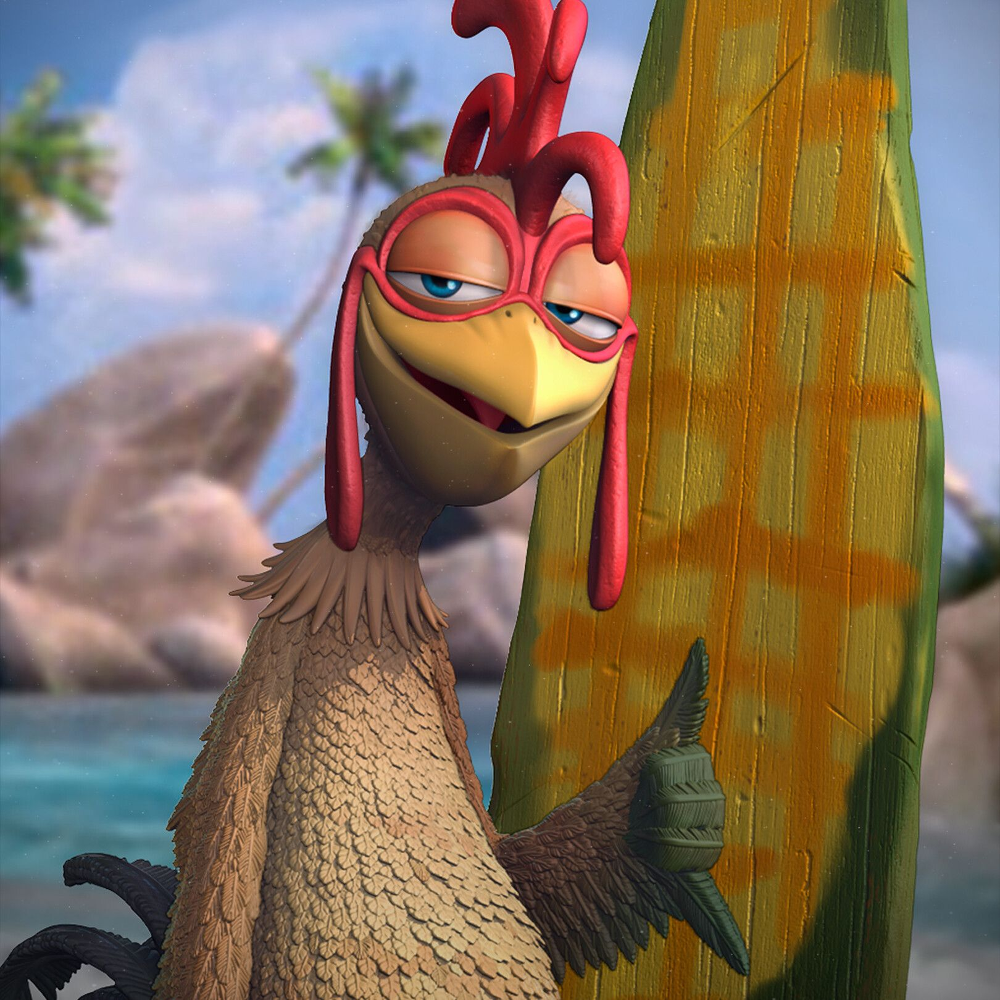
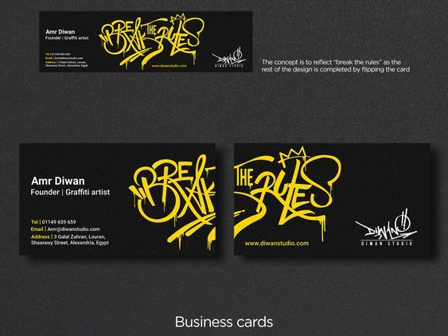
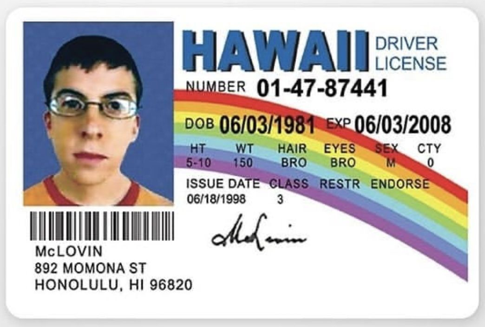

¿Quien soy?
Soy una persona atraida por la tecnologia y el desarrollo web, aunque a veces se me complican algunas cosas deseo aprender y poder desarrollar progranas dignos de un desarrollador de software y llegar a ser reconocido en este campo de la tecnologia porque soy un conquistador con sangre de conquistado.
Leer más
"Nunca me cerre al conocimiento un aprenidz eterno."
- Deyner Herrera
Mis proyectos

Hoja De Vida
Proyecto donde diseñamos nuestra hoja de vida usando conceptos basicos con HTML y CSS, colocando a prueba nuestros conomientos hasta el momento.
Ver proyecto
Tarjeta De Presentacion
Proyecto para aprender a usar diferentes colores y tonalidades en CSS sacando nuestra capacidad artistica con esta herramienta,creando marcadores de colores con gradientes y sombras para darle un diseño agradable al ojo.
Ver proyecto
Quien Soy
Proyecto donde se construye una pagina imitando el diseño de otra como ejemplo y hacerla lo mas funcional posible con caracteristicas nuestras de quienes creemos ser.
Ver proyecto
Portafolio
Proyecto donde crearemos una pagina para ser usada como nuestro portafolio y poder llevar las evidencias de todos los demas proyectos que hemos y sigamos haciendo mas adelante.
Ver proyecto